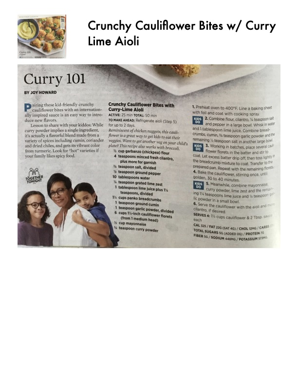

Crunchy Cauliflower Bites w/ Curry Lime Aioli

Original cookbook page 45
Putting these kid-friendly crunchy cauliflower bites with an international curry dip gets kids up to try new vegetables. A perfect curry combination - not too spicy, but full of flavor to share with your kiddos. While curry powder implies a single ingredient, curry powder often is complex and has a variety of spices including cumin, coriander and dried chiles.
Prep: 20 minutes • Cook: 30 minutes • Total: 50 minutes
Ingredients
- Cooking spray
- 1/2 cup garbanza (chickpea) flour
- 4 teaspoons minced fresh cilantro, divided
- 1 teaspoon kosher salt
- 1/2 teaspoon salt, divided
- 1/4 teaspoon ground pepper
- 1/2 cup sparkling water
- 1/4 teaspoon smoked fresh red jalapeño chile plus 1 tablespoon minced fresh cilantro
- 1 1/2 teaspoons, divided
- 1 cups panko breadcrumbs
- 1 large head cauliflower (about 2 1/2 pounds), cut into 2-inch florets
- 1 tablespoon garlic powder, divided
- 6 cups tri-inch cauliflower florets (about 1 1/2 pounds from 1 medium head)
- 1/3 cup mayonnaise
- 1 teaspoon water
Instructions
- Preheat oven to 400°F. Line a baking sheet with foil and coat with cooking spray.
- Whisk flour, 2 teaspoons cilantro, 1/2 teaspoon salt and 1/4 teaspoon pepper in a large bowl. Whisk in water and 1 tablespoon oil. Let stand 5 minutes. Combine panko and the remaining 1/2 teaspoon salt in another large bowl.
- Working in batches, place several cauliflower florets in the batter and stir to coat. Let excess batter drip off, then toss to coat in the panko mixture. Place on the prepared pan. Repeat with the remaining florets. Bake the cauliflower, stirring once, until golden, 25 to 30 minutes.
- Meanwhile, combine mayonnaise, lime juice, curry powder, and the remaining 1 1/2 teaspoons lime juice and 1 teaspoon oil in a small bowl.
- Garnish the cauliflower with the aioli and cilantro, if desired.
Recipe #45 from collection